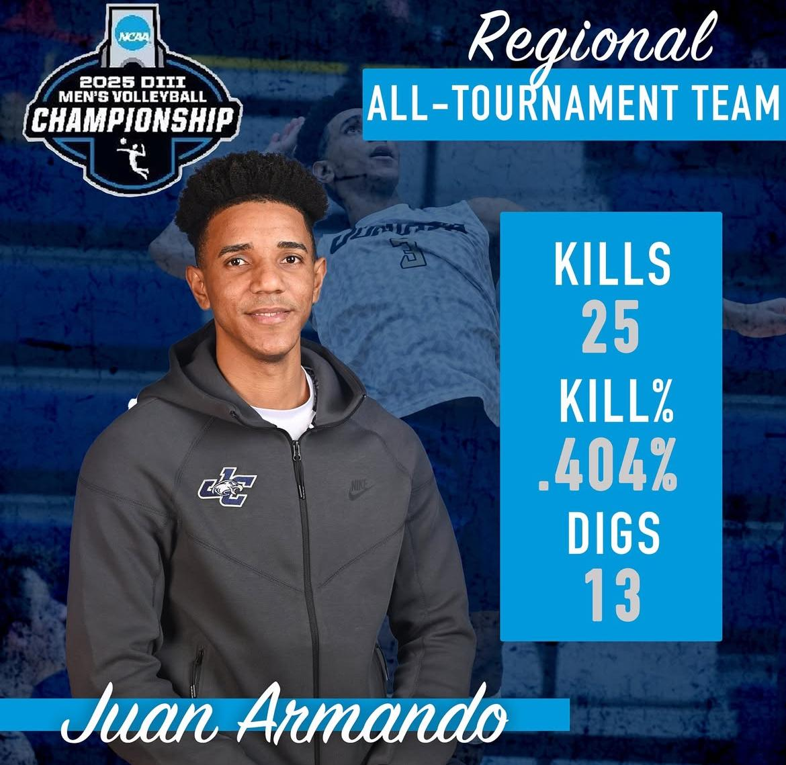
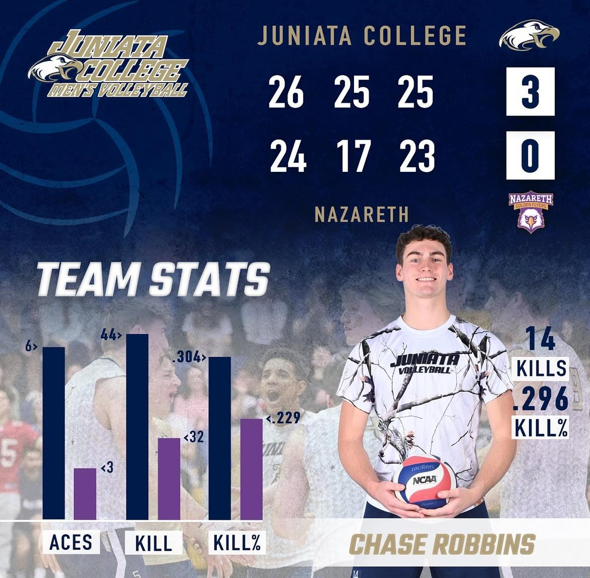
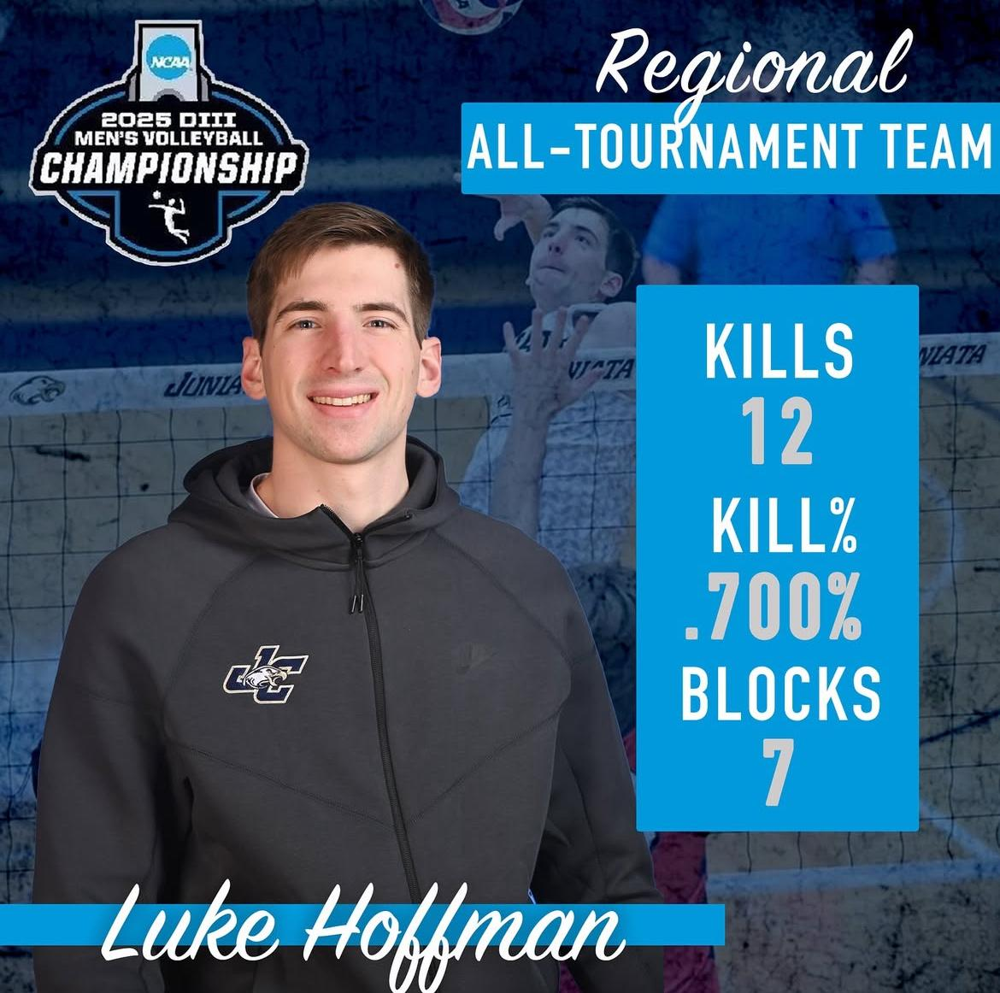

|  |  |  |
|
HOBOKEN, N.J. – The No. 5 Juniata men's volleyball team put together an efficient and balanced performance on Friday night, sweeping Wentworth 3-0 (25-20, 25-23, 25-23) at Canavan Arena in the second round of the NCAA Division III Men's Volleyball Championship. Juan Armando led the attack with 12 kills and added six digs while hitting .286 in the first game. 13 kills, seven digs and hit .522 in the second game. |
ROCHESTER, NY- The #6 Juniata men's volleyball team picked up a 3-0 (26-24, 25-17, 25-23) win at Nazareth University, Friday evening inside Robert A. Kidera Gym. Chase Robbins totaled 14 kills (.296), an ace, a dig and a block. |
HOBOKEN, N.J. – The No. 5 Juniata men's volleyball team put together an efficient and balanced performance on Friday night, sweeping Wentworth 3-0 (25-20, 25-23, 25-23) at Canavan Arena in the second round of the NCAA Division III Men's Volleyball Championship. Luke Hoffman paced the effort with one solo and four block assists, tallied eight of his twelve kills in the second game |